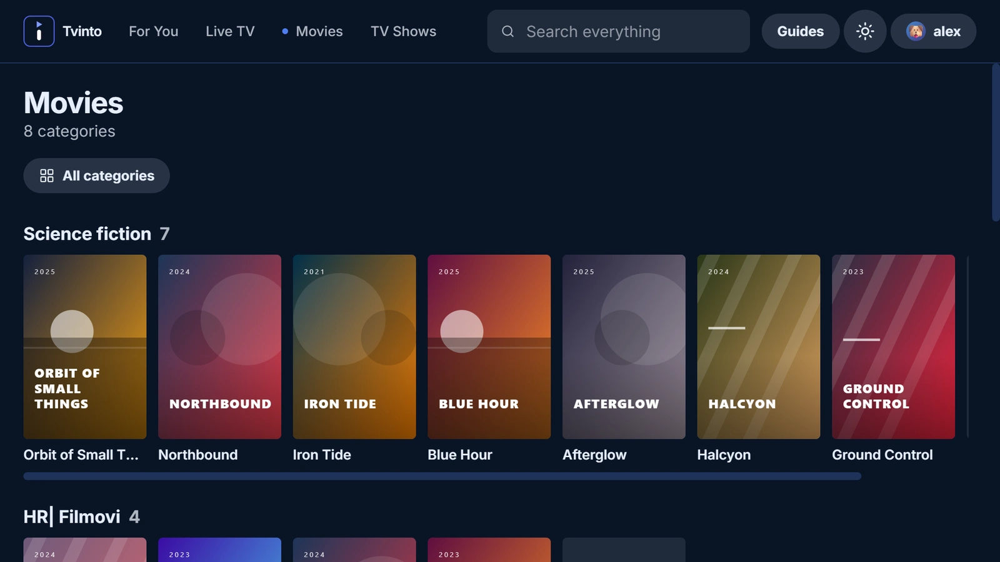
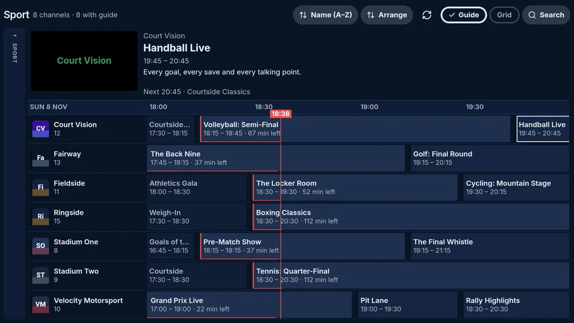
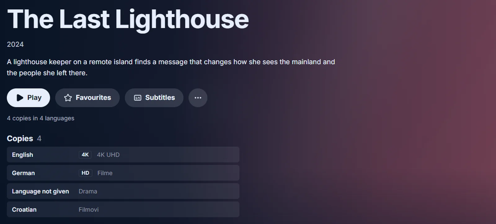
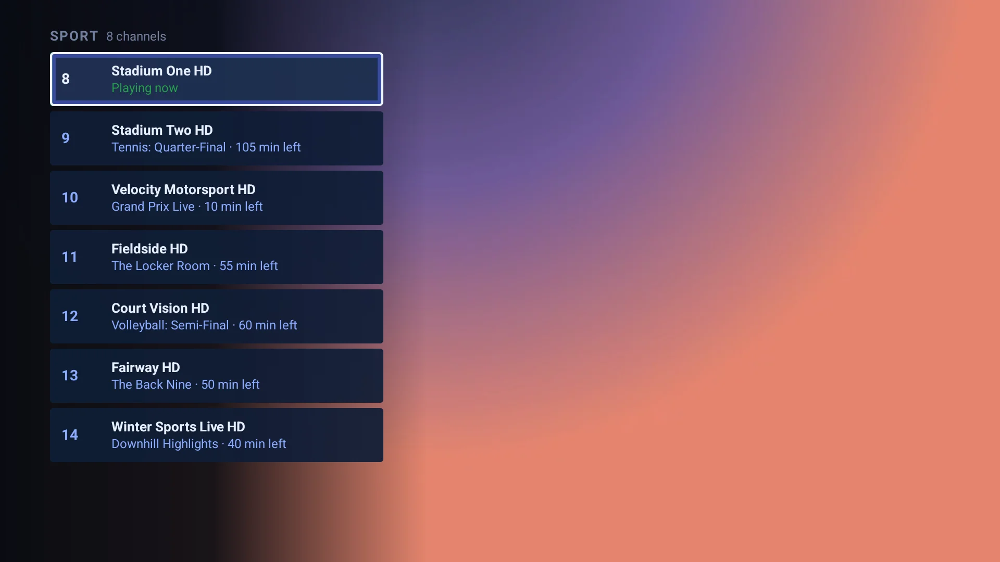
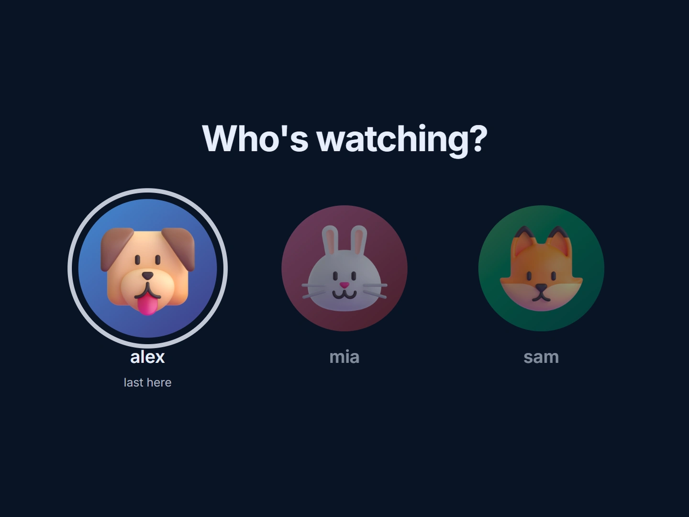
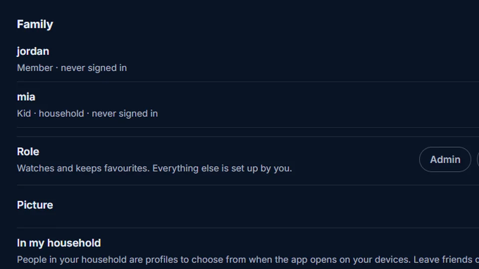
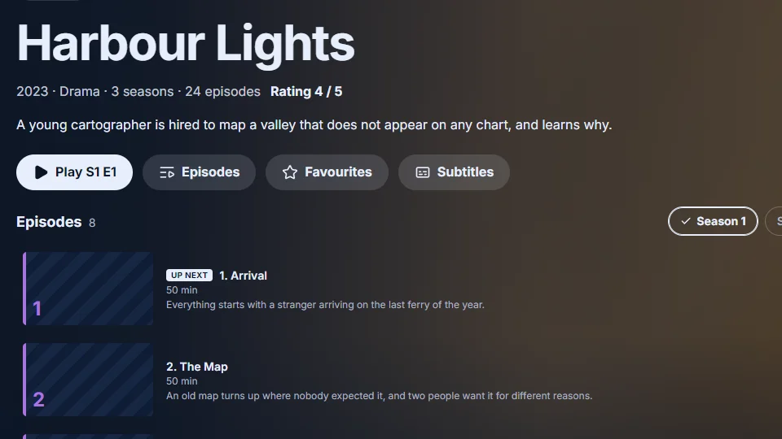

In the app straight away
- Live TV, guides and catch-up
- Films and series, copies grouped
- Favourites, search and PIN locks
- Several providers and M3U playlists
Tvinto plays the Xtream or M3U subscription you already have, with a real programme guide, every copy of a film on one page and a profile for everyone at home. Free, with no account and no catch.
Android TV, Android phones and Windows. Free under GPL v3.
A TV-style grid with what's on now, a mini guide inside the player, reminders and catch-up.

Providers list a film once per language and quality. Tvinto groups them and plays yours first.

Up and down switch channel. Left opens the mini guide with what's on everywhere else.

Who's watching? with a picture each. You set up the kids' accounts and their PIN.

Most of Tvinto works the moment you add your provider. A few extras need your own server or a free key.



Deploy it to your free Cloudflare account. Logins are encrypted on your devices, so the server can't read them.
The tvinto command changes what the app can: categories, sorting, guide matches, the player. It also runs as an MCP server for AI agents like Claude.
Every change shows first with a code and only happens when you apply it.
Install it with npm i -g tvinto, or run it once with npx tvinto. It needs Node.js 20 or newer.